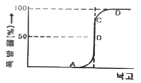
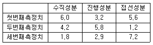
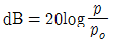
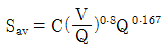
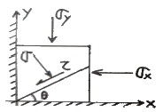
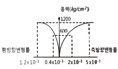
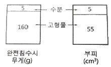
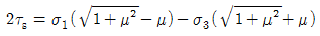
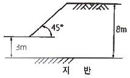
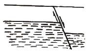

화약류관리기사 (2018-03-04 기출문제)
1과목: 일반화약학
1. 한국산업규격(KS)에서 정한 전기뇌관의 점화전류시험의 조건에 해당하는 것은?
- 0.025A의 직류전류에서는 발화하지 않고, 0.5A 이상의 직류전류에서는 기폭할 것
- 0.025A의 직류전류에서는 발화하지 않고, 1.0A 이상의 직류전류에서는 기폭할 것
- 0.25A의 직류전류에서는 발화하지 않고, 0.5A 이상의 직류전류에서는 기폭할 것
- 0.25A의 직류전류에서는 발화하지 않고, 1.0A 이상의 직류전류에서는 기폭할 것
(정답률: 90%)

2. 니트로글리세린의 최고 폭속에 가장 가까운 것은?
- 1000m/s
- 2000m/s
- 3000m/s
- 7500m/s
(정답률: 88%)
3. 뇌홍에 대한 설명으로 옳지 않은 것은?
- 뇌홍은 분자식은 Pb(ON2)3이다.
- 발열량은 165~210℃로 열에 예민하다.
- 발열량을 증진시키기 위해 KCIO3를 가한 것은 뇌홍폭분이라 한다.
- 600kg/cm2 이상의 강압에 의해서도 사압(死壓)이 있다.
(정답률: 94%)
4. 흑색화약 제조시 3매 혼합을 할 때 위험성을 고려하여 사용하는 용기로 옳은 것은?
- 가죽으로 내장한 목제 혼합기에서 목구로 혼합한다.
- 철제 혼합기에서 목구로 혼합한다.
- 가죽으로 내장한 목제 혼합기에서 철구로 혼합한다.
- 철제 혼합기에서 철구로 혼합한다.
(정답률: 87%)
5. 다음 중 무연화약류가 아닌 것은?
- Single Base Powder
- Double Base Powder
- Tripie Base Powder
- Black Base Powder
(정답률: 92%)
6. 다음 화약 중 소량인 경우에도 화염(火焰) 등 열원으로 폭발할 위험성이 가장 높은 것은?
- 흑색화약
- 피크린산
- 초안폭약
- TNT
(정답률: 84%)
7. 연주시험(lead block test)은 화약의 어떠한 성질을 조사하는 것인가?
- 안정도
- 순폭감도
- 흡습도
- 폭력
(정답률: 81%)
8. 다음 중 화약류의 예감제라 할 수 없는 것은?
- Nitroglycerine
- TNT
- DNN
- ANFO
(정답률: 74%)
9. 다음 중 1g 당 산소 과부족향이 +0.035g 인 것은?
- 질산칼륨
- 질산암모늄
- 니트로글리세린
- 니트로글리콜
(정답률: 85%)
10. 도폭선의 심약으로 사용되지 않는 것은?
- 테트릴
- TNT
- 헥소겐
- PETN
(정답률: 69%)
11. 기폭약(Initial explosives) 중 뇌홍(Mercury fulminate)이 폭발할 때 생기는 유독성 가스는?
- 일산화탄소
- 아황산가스
- 암모니아가스
- 황화수소가스
(정답률: 76%)
12. 낙추감도를 시험하여 감도곡선을 그렸다. B점을 무엇이라 하는가?

- 등접점
- 불폭점
- 임계폭점
- 완폭점
(정답률: 91%)
13. 혼합다이너마이트의 일종으로 질산나트륨에 니트로글리세린을 흡수시키고 황, 목분, 탄산칼슘 등을 혼합한 것은?
- 스트레이트 다이너마이트
- 젤라틴 다이너마이트
- 암모니아 다이너마이트
- 질산나트륨 다이너마이트
(정답률: 80%)
14. 다음 중 작약(Bursting Charge)으로 사용하는 것은?
- 면화약
- 트리니트로톨루엔
- 뇌홍
- 질화납
(정답률: 76%)
15. 다음 화약에서 질산에스테르 화합물이 아닌 것은?
- 니트로글리세린
- 니트로글리콜
- 펜트리트
- 트리니트로톨루엔
(정답률: 88%)
16. 폭발온도를 높이기 위하여 폭약에 혼합 사용하는 재료는?
- 알류미늄 분말
- 중유
- 과염소산칼륨
- 질산암모늄
(정답률: 90%)
17. 화약 또는 폭약 중에서 도화선의 심약으로 사용되는 것은?
- 니트로글리세린
- 카알릿
- 흑색화약
- 무연화약
(정답률: 88%)
18. H 도폭선의 심약은 무엇을 사용하는가?
- Hexamine
- RDX
- HMX
- PETN
(정답률: 78%)
19. 도트리쉬 폭속시험법으로 폭약의 폭속을 측정하였다. 도폭선의 중심에서 폭발 회합점까지의 거리가 6.2cm 일 때 폭약의 폭속은 몇 약 m/s 인가? (단, 강관의 도폭선 삽입 구멍간거리는 10cm 도폭선의 폭속은 57⑤m/s 이다.)
- 4100
- 4600
- 5800
- 6000
(정답률: 85%)
20. 반경 10cm 의 구상 주조 TNT를 중심에서 기폭시켰을 경우 총 폭발에너지는 몇 J 인가? (단, TNT 비중은 1.55, 폭속은 6.8km/s, 폭발열은 630kcal/kg 이다.)
- 1.47 × 107
- 1.71 × 107
- 1.16 × 109
- 1.83 × 109
(정답률: 62%)
2과목: 발파공학
21. 진동 측정 결과 각 성분에 대한 진동치(cm/s)가 주어졌다. 이 때의 최대벡터합(cm/s)은 얼마인가?

- 7.23cm/s
- 9.2cm/s
- 11.02cm/s
- 13.02cm/s
(정답률: 32%)
22. 2자유면 이상의 발파에 있어서 최소저항선이 130cm이고, 장약의 길이는 공경의 10배 일 때 공심은 얼마인가?(단 구멍의 반지름은 15mm이다)
- 1.25m
- 1.35m
- 1.4m
- 1.45m
(정답률: 25%)
23. 와이드 스페이스(Wide space) 발파의 설명으로 옳은 것은?
- 천공간격이 일반 벤치발파의 경우보다 넓고 저항선은 작다.
- 천공간격이 일반 벤치발파의 경우보다 넓고 저항선은 크다.
- 저항선이 일반 벤치발파의 경우보다 넓고 저항선은 좁다.
- 저항선이 일반 벤치발파의 경우보다 넓고 저항선은 넓다.
(정답률: 34%)
24. 비전기식 뇌관 튜브의 한쪽 끝에서 기폭하면 도포된 폭약이 폭굉하면서 전파한다. 이 때 전파속도는?
- 5000m/s
- 4000m/s
- 3000m/s
- 2000m/s
(정답률: 42%)
25. 벤치발파에서 공경 76mm 로 천공시 최대비산거리는 얼마인가? (단, Lundborg식 (SVEDEFO식)을 사용할 것)
- 116m
- 226m
- 436m
- 546m
(정답률: 19%)
26. 어떤 지역의 발파 계측 결과 자승근 환산거리에 의한 K 값이 45 이고 n 값이 1.7 이었다. 이 지역 주변의 보안물건의 분포 상황을 토대로 허용 진동속도를 0.5cm/s 로 결정하였다면 발파지점으로부터 50m 거리에 보안물건에 피해를 주지 않고 작업을 진행할 수 있는지발당 최대 장약량은 얼마인가?
- 10.23kg
- 12.56kg
- 14.36kg
- 16.65kg
(정답률: 35%)
27. 대발파를 하는 경우 사전에 검토해야 할 사항으로 가장 거리가 먼 것은?
- 당해 지역의 지형, 암질
- 사용하고자 하는 폭약의 종류
- 약실의 위치, 대피장소
- 불발된 폭약과 뇌관의 회수 및 처리방법
(정답률: 31%)
28. 조절발파법 중 라인 드릴링(Line drilling)에 대한 설명으로 옳지 않은 것은?
- 목적하는 파단선에 따라서 근접한 다수의 무장약공을 천공하여 인공적인 파단면을 만드는 방법이다.
- 천공간격이 조밀하기 때문에 천공비용이 많이 든다.
- 층리, 절리 등을 지닌 이방성이 심한 암반 구조에 대해서는 적용이 어려운 결점이 있다
- 약장약으로도 예정 굴착선에 영향을 줄 수 있는 지반에서는 적용할 수 없다.
(정답률: 37%)
29. 암석에 외력을 가하였을 때에 암석에 생기는 응력의 최대값을 무엇이라고 하는가?
- 파괴저항
- 인장응력
- 강도
- 전단응력
(정답률: 39%)
30. 다음 중 측벽효과(channel effect)에 관한 설명으로 거리가 먼 것은?
- 불발잔류약이 발생하기 쉽다.
- 약경이 공경보다 작을 때 발생한다.
- 고폭속의 에멀젼 폭약을 사용할 때 주로 발생한다.
- pre-splitting 발파에서는 측벽효과를 방지하기 위해 전폭성이 좋은 폭약을 사용해야 한다.
(정답률: 47%)
31. 발파폭풍압의 예측식 중

에서 p는 실측음압이고, po 최저가청음압이다. 다음 중 po 의 값으로 틀린 것은?- 2 × 10-5Pa
- 2 × 10-4dynes/cm2
- 2 × 10-9kgf/cm2
- 2.9 × 10-9psi
(정답률: 21%)
32. 구조물 발파해체공법이 기계해체공법에 비해 유리한 점이 아닌 것은?
- 지속적인 소음 및 분진의 발생이 없다.
- 시공 대상 구조물이 다양하다.
- 대상 구조물 주변의 여유공간이 필요하지 않다.
- 첨단기술을 이용한 공법으로 볼거리를 제공한다.
(정답률: 45%)
33. Kuznetsov(1973)는 TNT 의 양과 지질구조와의 관계에서 파쇄입자의 평균크기에 대해 연구하였다. 평균입자 크기를 예측하는 식

에서 고려되는 요소가 아닌 것은?- 암석계수
- 실제 사용폭약의 강도
- 발파공당 TNT 의 양
- 발파공당 파괴암석의 체적
(정답률: 40%)
34. 갱도발파에서 갱도의 크기가 2.0m × 2.0m 이고 공경 30mm로 25공을 천공하여 1.4m의 굴진장으로 최소저항선이 0.45m일 때 표준발파가 되었다. 실제 발파에서 시험발파와 장약량 조건를 동일하게 하여 1.8m × 1.8m인 갱도를 매회 1m씩 굴진하고자 할 때 소용공수는? (단, 장약장은 공경의 10배, 실제 발파의 암석계는(Ca)는 0.032)
- 14공
- 16공
- 18공
- 20공
(정답률: 23%)
35. 수중발파를 성공적으로 수행하기 위하여 고려해야 될 사항으로 가장 거리가 먼 것은?
- 특수한 수상 작업대 및 천공장비
- 장약, 전색, 발파 등의 특수한 작업방식
- 안전하고 신뢰성이 높은 기폭시스템
- 발파시 발생되는 비산
(정답률: 46%)
36. 두 개의 자유면을 가지는 암반이 있다. 평행한 여러 개의 발파공을 간격, 지름, 깊이를 동일하게 하고 지연시차가 동일한 뇌관을 사용하여 발파하는 방법은?
- 지발발파법
- 제발발파법
- 단발발파법
- MS발파법
(정답률: 44%)
37. 발파에 대한 설명으로 틀린 것은?
- NATM공법은 화약발파를 이용한 터널굴착 공법이다.
- 주변 암반에 손상을 주지 않기 위해 외곽공은 디커플링 장전을 한다.
- 외곽공 발파시 정밀폭약으로 굴착경계선이 잘 형성되지 않으면 위력이 큰 일반 폭약을 사용한다.
- 굴착경계선에 인접한 공의 장약밀도는 일반 발파공보다 작게 한다.
(정답률: 34%)
38. 공저깊이(sub-drilling) 1m, 최소저항선 3m, 공간격 3m의 패턴으로 천공하여 길이 24m, 폭12m, 높이 10m인 2자유면 수직 벤치(암반)를 절취하려고 한다. 공당 장약량이 25kg 이라면 이패턴에 대한 장약량은?
- 0.13kg/m3
- 0.26kg/m3
- 0.31kg/m3
- 0.42kg/m3
(정답률: 19%)
39. 발파시 발생되는 후가스의 종류로 거리가 먼 것은?
- 일산화탄소(CO)
- 이산화질소(NO
- 황화수소(H2O)
- 산소(O2)
(정답률: 45%)
40. 홉킨슨효과(Hopkinson effect)에 대한 설명으로 틀린 것은?
- 폭약이 폭발하면 폭굉에 따라 응력파가 발생한다.
- 응력파가 전파하여 자유면에 도달되면 이것이 다시 반사되어 암반소으로 되돌아간다
- 암석은 압축강도보다 인장강도에 휠씬 약하다.(압축강도의 1/20~1/10)
- 입사할 때의 압력보다 반사할 때의 전단파에 더 많이 파괴된다.
(정답률: 47%)
3과목: 암석역학
41. 그림과 같이 σx=50 KN/m2, σy=30 KN/m2이 작용할 때, 경사각 θ를 가진 사면에 작용하는 전단응력 응력이 작용하고 τ가 0 이 되고 수직응력 σ가 최대값을 갖게 되는 경사면의 각도는?

- 30°
- 45°
- 90°
- 0°
(정답률: 21%)
42. 몬모릴로나이트(Montmorillonite)를 함유하고 있는 이암의 특성이 아닌 것은?
- 물에 침수되면 팽창(swelling)이 크다.
- 건습작용을 반복적으로 받으면 부서진다.
- 풍화가 되어도 암석의 변형이 일어나지 않는다.
- 셰일은 픙리가 발달되어 성층면에 따라 잘 쪼개지는 성질인 박리성이 있지만, 이암은 평행구조가 없어 박리성이 없다.
(정답률: 44%)
43. 다음의 응력-변형률 곡선에서 구한 탄성계수(E)와 포아송비(v)로 적당한 것은?

- E = 2.4 × 105 kg/cm2, v = 0.40
- E = 2.4 × 105 kg/cm2, v = 0.20
- E = 3 × 105 kg/cm2, v = 0.40
- E = 3 × 105 kg/cm2, v = 0.20
(정답률: 26%)
44. 다음 중 경도(hardness)의 종류로 옳지 않은 것은?
- 압입경도
- 반발경도
- 마모경도
- 굴절경도
(정답률: 33%)
45. 체계적인 암반분류 방법을 정의한 BGD(Basic Geotechnical Description of rock masses)에 의하여 암반의 풍화정도와 일축압축강도를 평가하고자 할 때, 암반이 약간 풍화되었으며 일축압축강도가 120MPa일 때의 분류기호로 옳은 것은?
- W2S3
- W3S2
- W2S2
- W3S3
(정답률: 41%)
46. 암석의 무게와 부피가 아래 그림과 같을 때, 이 암석의 대략적인 건조밀도는?

- 2.68g/cm3
- 2.91g/cm3
- 3.00g/cm3
- 3.20g/cm3
(정답률: 29%)
47. 다음 중 초기지압 측정법이 아닌 것은?
- AE법
- 수압파쇄법
- 응력해방법
- 평판재하시험
(정답률: 42%)
48. 연직방향으로만 초기응력성분이 작용하는 공동의 경우, 측벽부에서 발생하는 유도응력이 가장 작은 단면의 형태는?
- 원형 공동
- 높이/폭의 비가 0.5인 타원형 공동
- 높이/폭의 비가 0.5인 oval형 공동
- 높이/폭의 비가 2.0이고 둥근 모서리가 있는 사각형 공동
(정답률: 39%)
49. 절리면을 따라 발생하는 사면붕괴의 경우 가장 적합하게 적용할 수 있는 파괴 기준은?
- 내부마찰각설
- Griffith 파괴이론
- 전단변형에너지설
- Hoek＆ Brown 파괴조건식
(정답률: 27%)
50. 현장시험을 수행하기 위한 장소 선택 시 고려하지 않아도 되는 것은?
- 암종과 체적
- 암석의 공극율
- 암석의 변질 상태와 포화정도
- 절리의 연속성 및 절리의 조밀도
(정답률: 32%)
51. 암석의 일축압축파괴강도가 120MPa이고 암석의 내부마찰각이 45°일 때, 이 암석의 전단강도는? (단, 암석의 내부마찰각설에서 전단강도는

이다.)- 20MPa
- 25MPa
- 30MPa
- 35MPa
(정답률: 34%)
52. 암반의 측압계수가 탄성론에 의한 값보다 크게 측정되는 원인으로 간주할 수 없는 것은?
- 침식
- 지각운동
- 잔류열응력
- 암반의 비선형적 거동
(정답률: 33%)
53. 암석의 변형 특성을 나타내는 역학적 모형 중 완전소성변형을 나타내는 것은?
- 스프링(spring)
- 대시포트(dashpot)
- 슬라이더(slider)
- 스프링과 대시포트
(정답률: 40%)
54. 암석의 단축압축시험에서 stress-axial strain 선도 곡선의 원점과 어느 특정한 응력점 사이의 평균 구배를 구하여 얻어지는 탄성계수를 무엇이라고 하는가?
- 접선탄성계수
- 할선탄성계수
- 동탄성계수
- 체적탄성계수
(정답률: 36%)
55. Q분류법의 분류요소 중 블록 크기와 관련된 분류요소로 알맞게 짝지어진 것은?
- 암질지수, 절리군 계수
- 암질지수, 절리면 변질 계수
- 지하수 보정 계수, 응력 저감 계수
- 절리면 거칠기 계수, 절리면 변질 계수
(정답률: 41%)
56. 암석의 급격한 파괴가 아닌 미시적 파괴에 대한 설명으로 가장 거리가 먼 것은?
- 입자와 입자 사이의 미끄럼 분리
- 입자 내의 결정입자에 따라 벽개분리
- 입자 내에서 일어나는 미끄럼에 의한 전단파괴
- 물체 내에 축적된 에너지가 일시에 방출되는 파괴
(정답률: 40%)
57. 길이 100mm의 NX코어(직경 54mm)의 암석 시험편을 이용하여 탄성파 속도를 측정하였더니, P파의 도달 시간은 22 μsec, S파의 도달 시간은 38 μsec 이었다. 이 때 P파와 S파의 탄성파 속도는 각각 얼마인가?
- 3550 m/sec, 2594 m/sec
- 4545 m/sec, 2632 m/sec
- 4640 m/sec, 2770 m/sec
- 5270 m/sec, 2656 m/sec
(정답률: 33%)
58. 압열인장시험에 대한 설명으로 옳지 않은 것은?
- 인장강도는 시혐편의 두께에 비례한다.
- 인장강도는 시험편의 직경에 반비례한다.
- 시험편의 두께는 직경이 0.5~1.0 배로 한다.
- 시험편에는 인장응력과 압축응력이 동시에 발생된다.
(정답률: 25%)
59. 다음 중 삼축압축실험에서 봉압이 증가할 때 일어나는 현상은?
- 잔류강도가 감소한다.
- 압축강도가 증가한다.
- 취성파괴가 일어난다.
- 변형률 연화 현상이 심화된다.
(정답률: 33%)
60. 다음 중 절리면의 전단강도에 영향을 미치는 요소로 옳지 않은 것은?
- 절리 방향
- 잔류마찰각
- 절리면강도(JCS)
- 절리면거칠기계수(JRC)
(정답률: 34%)
4과목: 화약류 안전관리 관계 법규
61. 꽃불류 저장소에 저장하여서는 안되는 화약류는?
- 미진동 파쇄기
- 신관 및 화관
- 신호염관
- 전기도화선
(정답률: 31%)
62. 총포·도검·화약류 등의 안전관리에 관한 법률상 5년 이하의 징역 또는 1천만원 이하의 벌금형으로 처벌받아야 하는 경우는?
- 화기 취급 및 흡연의 금지 등을 위반한 사람
- 화약류의 발파 또는 연소시 사용허가를 받지 아니한 사람
- 화약류를 행상으로나 노점에서 판매한 사람
- 18세 미만의 자에게 화약류를 취급하게 하는 사람
(정답률: 50%)
63. 화약류사용자가 화약류출납부를 보존하는 기간은?
- 기입을 완료한 날부터 3년
- 기입을 완료한 날부터 2년
- 기입을 완료한 날부터 1년
- 사용허가의 종료시까지만 보존하면 된다.
(정답률: 51%)
64. 동일 차량에 함께 실을 수 없는 화약류는?
- 폭약 - 도폭선
- 화약 – 꽃불류(크래커블인옥)
- 도폭선 - 실탄·공포탄
- 포경용신관 - 전기뇌관
(정답률: 33%)
65. 화약류 사용허가를 받지 아니하고 사용할 수 있는 사람은?
- 사격연습을 위하여 2000개의 실탄 또는 공포탄을 사용하고자 하는 사람
- 경찰특공대원이 범죄 현장에서 출입문을 파쇄하기 위해 폭약을 사용하는 경우
- 공인된 기관에서 실험용으로 1회 5킬로그램 이하의 폭약을 사용하는 사람
- 연극효과를 위해 동일 장소에서 1일 폭약 20그램 이하 꽃불류 50개를 사용하는 경우
(정답률: 46%)
66. 화약류저장소에 설치하는 피뢰장치의 기준으로 옳은 것은?
- 피뢰도선 및 가공지선의 전극을 땅에 묻을 때에 그 부근에 가스관이 있을 경우에는 그로부터 2m 이상의 거리를 두어야 한다.
- 피보호건물로부터 독립하여 피뢰침 및 가공지선을 설치하는 경우에는 피뢰침 및 가공지선의 각 부분은 피보호건물로부터 2m 이상의 거리를 두어야 한다.
- 피뢰도선은 직선으로 설치하되 부득이 곡선으로 할 때에는 곡률반경을 20cm 이상으로 하여 설치한다.
- 돌침의 지지물로서 철관을 사용할 때에는 피뢰도선이 철관내를 통과하게 하여 외부에 피로도선이 나타나지 않도록 한다.
(정답률: 44%)
67. 화약류저장소의 저장방법이나 저장량을 위반한 때의 벌칙은?
- 10년 이하의 징역 또는 2천만원 이하의 벌금형
- 5년 이하의 징역 또는 1천만원 이하의 벌금형
- 3년 이하의 징역 및 700만원 이하의 벌금형
- 2년 이하의 징역 또는 500만원 이하의 벌금형
(정답률: 22%)
68. 화약류의 운반 방법이 틀린 것은?
- 화약류를 다룰 때 발을 보호하기 위해 철물류로 된 신을 신었다.
- 야간이나 앞을 분간하기 힘든 상황에서 주차하기 위해 차량의 전방과 후방 15m 지점에 적색등불을 달았다.
- 뇌홍을 수분 또는 알콜성분이 25%정도 머금은 상태에서 운반하였다.
- 니트로셀룰로우스를 수분 또는 알콜성분이 23%정도 머금은 상태에서 운반하였다.
(정답률: 52%)
69. 폭약 300kg을 사용하여 1회 발파하는 경우 발파계획과 작업을 해야 하는 자는?
- 1급 또는 2급 화약류관리보안책입자
- 1급 화약류관리보안책임자 쪼는 현장소장
- 1급 화약류관리보안책임자
- 2급 화약류관리보안책임자
(정답률: 51%)
70. 일시적인 토목공사를 하거나 그 밖의 일정한 기간의 공사를 하는 사람이 그 공사에 사용하기 위하여 화약류를 저장하고자 하는 때에 한하여 설치할 수 있는 화약류저장소는?
- 수중저장소
- 간이저장소
- 2급저장소
- 3급저장소
(정답률: 43%)
71. 화약류 저장소가 보안거리 미달로 보안물건을 침범했을 경우 행정처분기준으로 맞는 것은?
- 허가취소
- 6월 효력정지
- 3월 효력정지
- 감량 또는 이전명령
(정답률: 56%)
72. 다음 중 화약류관리보안책입자를 면허를 발급 받을 수 없는 사람은?
- 20세의 여자
- 화약류관리보안책임자면허 대여행위로 면허취소 후 6개월이 경과된 사람
- 총포·도검·화약류 등의 안전관리에 관한 법을 위반하여 기소유예처분을 받은 사람
- 총포·도검·화약류 등의 안전관리에 관한 법을 위반하여 벌금형을 선고받고 10년이 지난 사람
(정답률: 50%)
73. 다음 중 총포·도검·화약류 등의 안전관리에 관한 법률의 목적으로 옳은 것은?
- 총포·도검·화약류·분사기·전자충격기의 취급을 규제함으로써 화약류의 제조, 판매, 소비 등의 사항을 파악한다.
- 총포·도검·화약류·분사기·전자충격기의 취급을 규제함으로써 화약류의 도난을 방지한다.
- 총포·도검·화약류·분사기·전자충격기·석궁으로 인한 위험과 재해를 미리 방지함으로써 공공의 안전을 유지하는데 이바지함을 목적으로 한다.
- 총포·도검·화약류·분사기·전자충격기의 취급을 규제함으로써 산업의 발전을 도모한다.
(정답률: 41%)
74. 다음의 화약류 중 제조, 수출·입에 관하여는 총포·도검·화약류 등의 안전관리에 관한 법률의 적용을 받지만 판매, 소지에 관하여는 적용받지 않는 품목으로 옳은 것은?
- 총용 뇌관
- 신관 및 화관
- 흑색화약
- 장난감용 꽃불류
(정답률: 53%)
75. 1급 화약류저장소에 폭약 20톤을 저장하고자 한다. 저장소 주위에 병원이 있을 경우 보안거리는 얼마 이상 두어야 하는가?
- 220m 이상
- 340m 이상
- 400m 이상
- 440m 이상
(정답률: 51%)
76. 화약류 폐기의 기술상의 기준으로 옳지 않은 것은?
- 얼어 굳어진 다이너마이트는 완전히 녹여서 연소처리 하거나 500g 이하의 적은 양으로 나누어 순차로 폭발처리 할 것
- 화약 또는 폭약은 조금씩 폭발 또는 연소 시킬 것
- 화공품(도화선 및 도폭선을 제외한다)은 적은 양으로 포장하여 땅속에 묻고 공업용 뇌관 또는 전기뇌관으로 폭발처리 할 것
- 도폭선은 연소처리 하거나 물에 적셔서 분해처리 할 것
(정답률: 39%)
77. 지하 1급저장소의 지반의 두께 기준 중 저장하는 폭약이 25톤 이하일 경우 지반의 두께는 얼마 이상이어야 하는가?
- 29m
- 28m
- 26m
- 24m
(정답률: 43%)
78. 화약류 취급업자의 장부 비치 등에 대한 설명으로 옳지 않은 것은?
- 제조업자는 화약류 제조 명세부 및 원료화약류 수지명세부를 비치하여햐 한다.
- 화약류 사용자는 화약류의 양도·양수 명세부를 비치하여야 한다.
- 화약류 사용자는 화약류 출납부를 비치하여야 한다.
- 총포소지자는 실탄의 양도·양수 및 사용대장을 총포를 보관한 날부터 1년간 보존하여야 한다.
(정답률: 40%)
79. 폭약 1톤으로 환산하는 수량에 해당되지 않는 것은?
- 실탄 또는 공포탄 100만개
- 신관 또는 화관 5만개
- 신호뇌관 25만개
- 미진동 파쇄기 5만개
(정답률: 51%)
80. 다음의 행위를 위하여 허가를 받아야 하는 대상의 연결로 옳지 않은 것은?
- 흑색화약의 수입허가 - 경찰청장
- 전기뇌관의 제조업허가 경찰청장
- 화약류의 판매업허가 – 소재지 관할 지방경찰청장
- 꽃불류의 수입허가 – 소재지 관할 지방경찰청장
(정답률: 36%)
5과목: 굴착공학
81. 흙이 고체 상태에서 반고체 상태로 변하는 순간의 경계 함수비는?
- 압밀한계
- 소성한계
- 액성한계
- 수축한계
(정답률: 32%)
82. 암반의 단위중량을 27 KN/m3이라고 가정할 때, 1 km 심도에서의 연직응력은?
- 27 KN/m2
- 27 MPa
- 270 KN/m2
- 270 MPa
(정답률: 39%)
83. 그림과 같은 단순사면에서의 심도계수는?

- 0.4
- 0.6
- 1.6
- 2.7
(정답률: 33%)
84. 터널계측은 일상적인 시공관리를 위한 일상계측(계측 A)과 정밀 분석을 위한 정밀계측(계측B)으로 분류한다. 다음 중 일상계측에 해당하지 않는 것은?
- 지중변위측정
- 천단침하측정
- 록볼트 인발시험
- 터널 내 관찰조사
(정답률: 33%)
85. 다음 중 절리면 압축시험으로 구할 수 있는 것은?
- 수직강성
- 전단강성
- 절리강도
- 절리거칠기
(정답률: 24%)
86. 터널의 콘크리트 라이닝 중 철근보강 콘크리트를 설계하는 방법으로, 구조물의 안전에 대한 여유를 확보하기 위하여 하중계수를 선정하고 하중조합을 적용하여 설계하는 방법은?
- 강도설계법
- 한계평형법
- 허용응력법
- 하중저항계수 설계법
(정답률: 27%)
87. 주상절리나 판상절리가 발달한 화산암으로 구성된 암반사면에서 주고 발생할 수 있는 사면파괴의 형태는?
- 쐐기파괴
- 원호파괴
- 평면파괴
- 전도파괴
(정답률: 40%)
88. RMR 분류법에서 배점이 가장 높은 분류변수로 옳은 것은?
- RQD
- 불연속면의 간격
- 불연속면의 상태
- 암석의 일축압축강도
(정답률: 38%)
89. 높이가 6.0m인 수직 옹벽에 대하여 단위 폭당 벽에 작용하는 Rankine 전주동토압은? (단, 지반의 단위중량 2 t/m3, 점착력 0 t/m2, 내부마찰각 30°이다.)
- 6.75 t/m
- 12.0 t/m
- 12.75 t/m
- 18.0 t/m
(정답률: 33%)
90. 로드헤더를 이용한 굴착법의 특성으로 옳지 않은 것은?
- 발파공법에 비하여 지반의 이완이 적다.
- 발파공법에 비해 터널 지보량이 증가한다.
- 분진의 발생량이 많아 환기 및 살수 설비가 필요하다.
- 부분적인 경암에 대해서는 발파공법과 병용 시공이 가능하다.
(정답률: 30%)
91. 다음 지보재의 종류 중 주동보강식 지보재(active reinforcement)에 속하는 것은?
- 철망(wire mech)
- 숏크리트(shotcrete)
- 강아치(stell arch support)
- 마찰형 록볼트(friction rockbolt)
(정답률: 25%)
92. 등하중 재하방식을 이용한 공내재하시험 결과 재하압력 증분이 50 kg/cm2일 때 반경방향 변위 증분이 0.03cm로 나타났다면, 변형계수는? (단, 공의 직경은 4cm, 암반의 포아송비는 0.2이다.)
- 1200 kg/cm2
- 3000 kg/cm2
- 4000 kg/cm2
- 7800 kg/cm2
(정답률: 13%)
93. 지하공간의 특징으로 옳지 않은 것은?
- 기밀성
- 단열성
- 변온성
- 차광성
(정답률: 43%)
94. 암반이 매우 연약하여 팽윤 또는 유동하는 상태의 암반을 분류하는 데 가장 적절한 방법은?
- Q 분류법
- RMR 분류법
- RSR 분류법
- SRM 분류법
(정답률: 38%)
95. 터널굴착 시 작업막장의 안정을 위한 보조공법으로 사용되지 않은 것은?
- 록볼트 타설
- 약액주입공법
- 웰포인트공법
- 포어폴링(Forepoling)
(정답률: 36%)
96. 다음 중 NATM터널의 막장안정에 대한 대책이 아닌 것은?
- 지하수위 저하
- 막장에 코어(core) 남기기
- 강관다단그라우팅 등의 보조공법
- 막장 숏크리트 타설 또는 막장면 록볼트
(정답률: 38%)
97. 다음 중 마찰형 주변 압입식 앵커의 시공순서로 옳은 것은?
- 천공 – 인장재의 가공·조립·삽입 – 양생 – 가압주입(압입) - 긴장정착 – 자유길이부분충전 - 주입
- 천공 – 가압주입(압입) - 양생 – 인장재의 가공·조립·삽입 – 긴장정착 – 자유길이부분충전 - 주입
- 천공 – 긴장정착 – 가압주입(압입) - 양생 – 인장재의 가공·조립·삽입 – 자유길이부분충전 - 주입
- 천공 - 인장재의 가공·조립·삽입 – 가압주입(압입) - 양생 – 긴장정착 – 자유길이부분충전 - 주입
(정답률: 39%)
98. 터널의 굴착형태에 따라 천반과 측벽에서 접선방향의 유도응력 크기는 달라진다. 높이 : 폭 = 2 : 1 인 타원형 공동의 측벽에 발생하는 접선응력의 크기는? (단, 크기 P의 연직응력만 작용하는 경우)
- 1P
- 2P
- 3P
- 4P
(정답률: 45%)
99. 다음 그림과 같은 정단층이 발생하기 위한 응력조건에서 수평응력(σh)과 수직응력(σv)의 비(K=σh/σv)로 가장 적당한 것은?

- 0.5
- 1.0
- 1.5
- 2.0
(정답률: 39%)
100. 콘크리트의 건·습식 공법에 대한 설명으로 옳지 않은 것은?
- 습식은 청소, 보수가 쉽다.
- 분진은 건식이 비교적 많다.
- 압송거리는 건식이 우수하다.
- 리바운드율은 습식이 비교적 작다.
(정답률: 38%)